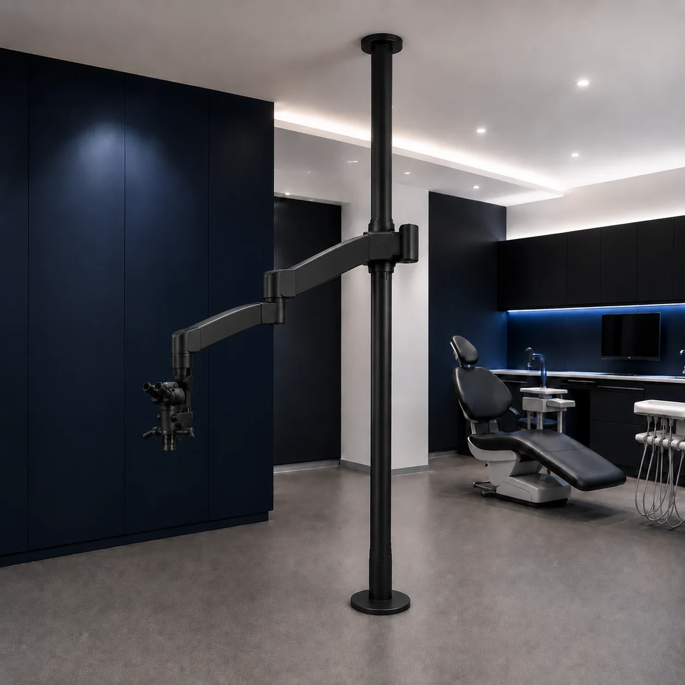

Вариант установки
Распорная система рассматривается, когда геометрия потолка или стен затрудняет другие варианты, а пол и перекрытие позволяют принять усилия.

CastorSteelОставить заявку ↗Распорное крепление образует стационарную опору между полом и несущим перекрытием. Стойка проектируется под модель микроскопа, геометрию кабинета и рабочие положения врача после проверки обеих опорных поверхностей.
Обсудить распорную систему ↗
Распорная система рассматривается, когда геометрия потолка или стен затрудняет другие варианты, а пол и перекрытие позволяют принять усилия.
Сечение, узлы и положение стойки рассчитываются под оборудование и рабочий сценарий, а не выбираются универсально.
Положение согласуется с креслом, проходами, движением врача и ассистента, чтобы поддержать эргономику кабинета.
Для распорной стойки необходимо проверить конструкцию пола, несущего перекрытия, высоту помещения, отделочные слои и доступ к точкам опирания. По этим данным инженер определяет допустимость решения и способ монтажа.
Система не заявляется как подходящая для любого помещения или устанавливаемая без сверления. Конкретные узлы крепления, нагрузка и необходимость вмешательства в отделку определяются проектом.
Изучаем пол, перекрытие, отделку и геометрию кабинета.
Назначаем конструкцию стойки и место оборудования.
Производим элементы по согласованному проекту.
Монтируем стойку, оборудование и проверяем рабочую зону.
Проект учитывает модель, комплектацию, массу, центр тяжести, интерфейс и кабели микроскопа. Возможность установки подтверждается после получения документации на оборудование и обследования помещения.
Да. Система взаимодействует с обеими опорными поверхностями, поэтому их конструкцию и состояние оценивают совместно.
Нет. Это один из вариантов, допустимость которого зависит от помещения, оборудования и рабочего сценария.
Перенос требует повторной оценки нового места и, возможно, корректировки проекта. Самостоятельно переставлять рассчитанную конструкцию нельзя.
Распорная стойка — стационарная конструкция с опиранием между полом и перекрытием, а не мобильная стойка на колёсах. Её положение и узлы определяются проектом.
Оставьте модель микроскопа и контакты — начнём с исходных данных.
Оставить заявку ↗